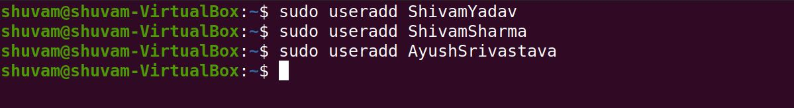
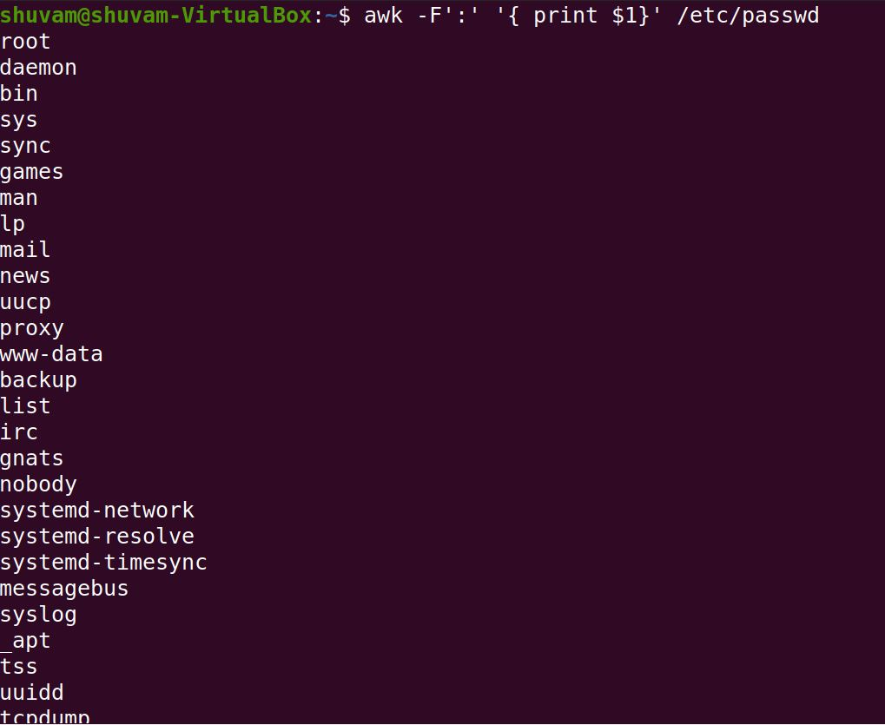

Week 1 & 2 assignment
Installation of VirtualBox
- Step-1: Go to following link: https://www.virtualbox.org/wiki/Downloads
- Step-2: Choose your system.
- Step-3: Download Ubuntu ISO image.
- Step-4: Attach the downloaded ISO image to virtual CD Drive.
- Step-5: Install the Operating system.
Installation of packages
- Install git,vim,gtypist by the following command on terminal:
apt install PackageName
- apt update PackageName updates the package index.
- apt upgrade PackageName installs the package to latest version.
- apt remove PackageName removes the package leaving its configurations.
- apt purge PackageName removes the package with its configurations.
User management
- sudo useradd NameOfUser adds a new user to the directory.

- awk -F':' '{ print $1}' /etc/passwd will show the list of all the users.

- userdel -r UserName will delete the user.
Partitions